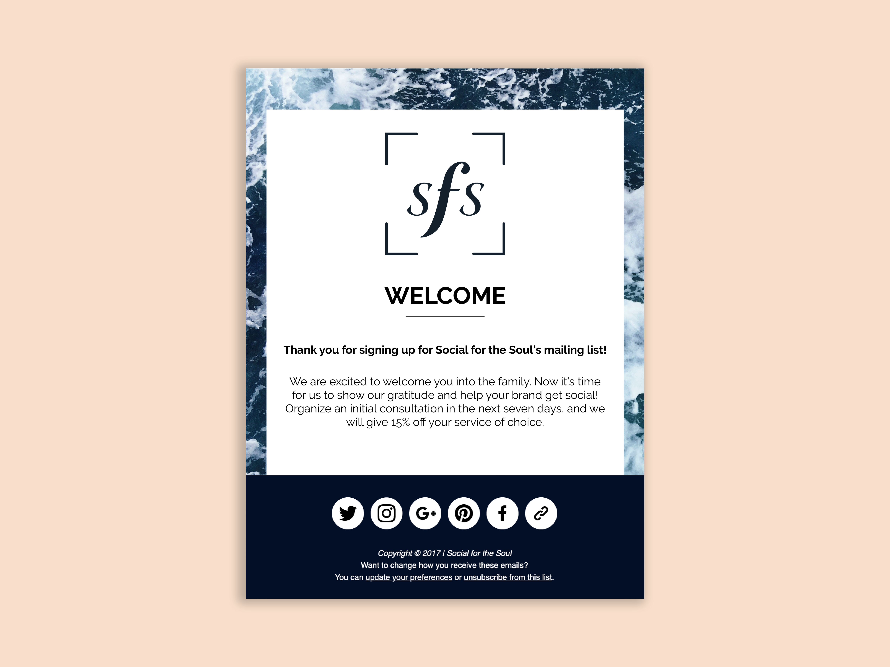
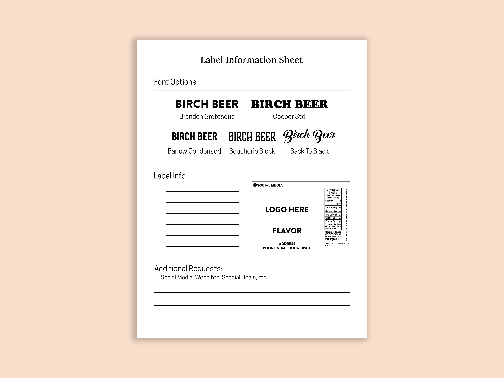
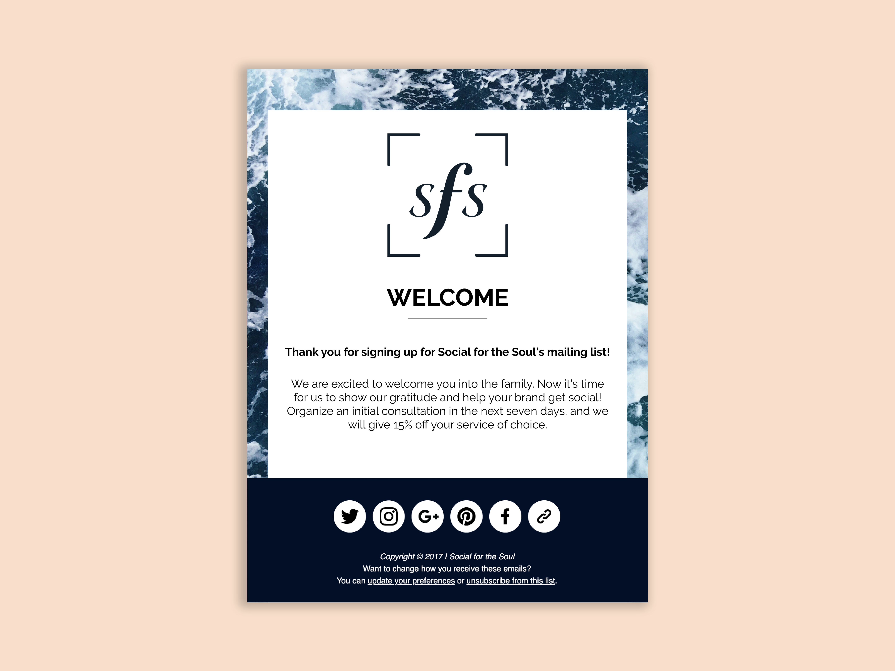
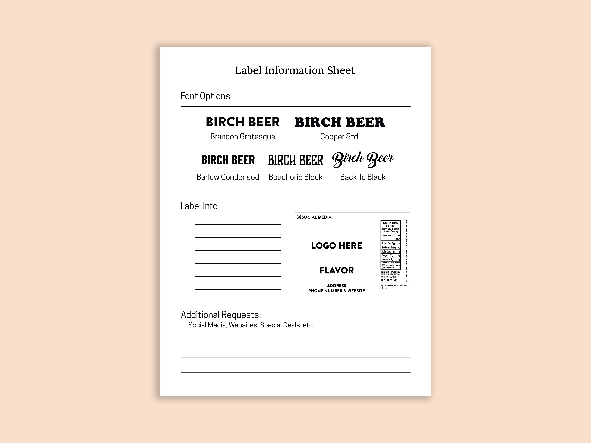
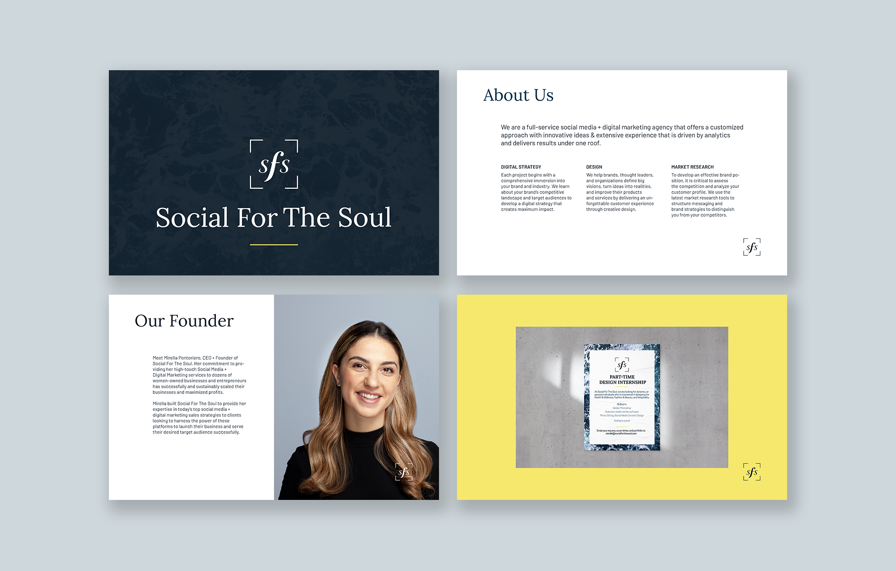
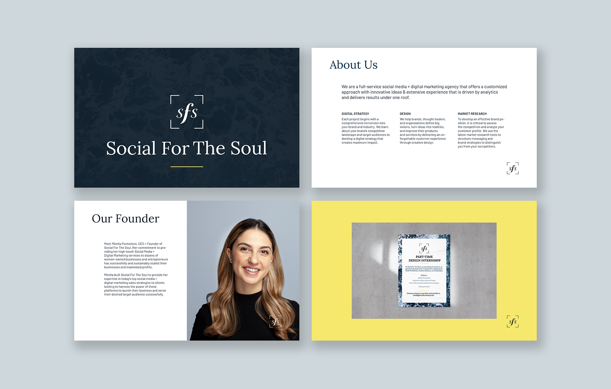

Martina Gallo
Martina Gallo
Three Beige Books
Social Media + Digital Marketing
Social For The Soul is a full-service social media and digital marketing agency that offers a customized approach to design. Driven by analytics and extensive experience, SFS directly targets their clients' audience to develop a digital strategy that creates maximum impact through social media, market research, and email marketing.

 



While at SFS, I designed and delivered social media templates, flyers, labels, posters, email newsletters, Instagram layouts, Facebook posts, and social media assets for an indie film.
 

I also worked on potential redesigns for the Social's own branding. Prior to this time, their colors were limited to ocean blue, navy, and white. I added to the existing palette and new typefaces to create a sense of elegance and proficiency. Afterwards, flyers were created to advertise the upcoming position of part-time design intern.